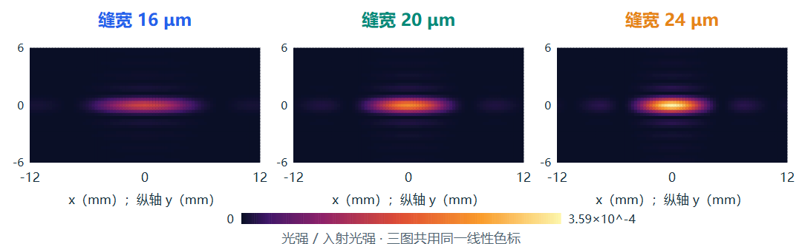

自然语言输入 → AI整理条件 → 三候选比较 → 查看曲线与二维光强
比较16、20、24 μm缝宽。保存记录中，20 μm候选的第一暗纹距离为6.3300 mm，达到6.33±0.05 mm目标。

查看单缝保存结果与候选 →
2026-10-20保存的实际运行。新任务请启动工作台，点击首页的“填入这组示例条件”，接入自己的AI并核对计划后计算。
850 nm薄膜：8层反射率86.02%
完整使用步骤见下载包 docs 中的单缝入门示例。